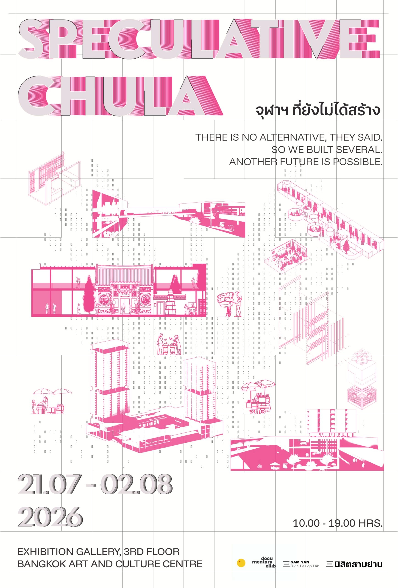

Walk as somebody. Play a role and walk their path through the archive.
Reveal
The Incomplete Archive · Issue 01
To Acknowledge is to Empower
A century-old Teochew shrine on Block 33, Sam Yan, is still standing. Its fourth-generation caretaker now faces a 122-million-baht civil-damages claim from Chulalongkorn University's property arm, PMCU. It's not the first time this pattern has run: the same institutional grammar has already played out at Scala, at Sam Yan Market, at Suanluang.
Visit the Site
Walkthrough the site
The Mechanism
Displacement is never one villain's decision.
It's an institutional grammar: five separately defensible moves, a heritage law that excludes you, a lease quietly not renewed, a civil suit that turns staying into debt, an international award that launders the outcome, and a vocabulary that calls it "development." All five run through a single actor that wears a public, tax-exempt shell while running a profit logic underneath.
The numbers sit at two different scales. The shrine's caretaker personally faces a 122-million-baht civil-damages claim, the sharpest, most immediate figure in the case. Zoom out and the same institutional grammar has produced 4.6 billion baht of debt across the district's redevelopment, the scale at which one shrine's eviction connects to the whole neighborhood's financing.
The project's job isn't advocacy. It's legibility: making that grammar contestable before any settlement is reached.
Five Ways Into the Same Archive
The map. The physical map of the sites in dispute.
The network. Lines of power, 14 actors, 8 instruments, 6 events, filterable and hoverable.
Cases. Conflict readings across site clusters, two-sided analysis, mechanism reveal.
Gallery. Image archive of documents, photos, drawings.
What I Did
- Owned three sites within a ten-group studio: Chamchuri Square, Mazu Shrine, Centenary Park, using Samyan Mitrtown as a reference case.
- Main author and editor of the v5 relational database: 7 sheets, roughly 176 entries, spanning Actors, Instruments, Events, Sites, and Frameworks.
- Traced the capital-narrative cycle through primary legal sources: 385 rai of land, a 9-billion-baht mall, an ASLA award, international reputation, and financing for Block 33.
- Designed and built the live site's five-path architecture and shared design system, and deployed it to Cloudflare.
- Designed nine composite personas with no built-in allegiance, so readers reach their own position instead of following a script.
The Method in One Decision
Neutrality was not a soft choice. It was the analysis.
Early on, the project color-coded institutions by camp: capital in one color, opposition in another. I reversed that decision. Awards bodies, ranking systems, and NGOs exist independently and get invoked by every side, so I reclassified them as structurally neutral, grey, rather than assigning them a side. That reclassification strips the moral coloring off institutions that launder displacement into prestige, and lets the reader see who is actually moving whom.
The project also refuses two easy stories: the "rescue the shrine" sentimentality, and the "China-as-exotic" frame that flattens a specific mechanism into a cultural curiosity. It draws on Sulak Sivaraksa's Engaged Buddhism as a non-Western critical resource, and names an uncomfortable fact directly: this is intra-ethnic class displacement, Thai-Chinese elite capital pushing out Thai-Chinese grassroots community.
AI Angle
Jake is an interview instrument, not a mascot.
The site includes an AI-driven oral history tool, a chatbot with a persona named Jake, built to feel like a familiar, low-stakes conversation rather than a formal research interview. Through natural conversation, Jake draws out community members' memories of Samyan, of Chulalongkorn University, and of the shrine now facing a civil-damages claim.
The tool manages context across a full multi-turn conversation, adjusts to the emotional weight of what's being shared, and flags privacy-sensitive content in real time. Every conversation gets categorized and folded directly into the project's 176-entry relational database, the same evidence base that powers the rest of the site.
Talk to Jake on the live site
From the archive
What the site is made of

